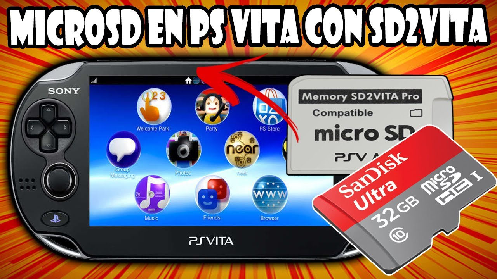

Sd2vita
Para poder configurar una tarjeta microSD en nuestra consola PSVita
Para esta Guia
Requisitos para este tutorial
- PC o Notebook con Windows 7, 8, 8.1, 10
- Para descomprimir archivos .rar o .zip
Programas para este Tutorial
Archivos Para descargar
| Archivos | Servidores | |
|---|---|---|
| Sd2vita | Mega | |
| UX0toSD | Mega | |
| WEB Oficial | rinnegatamante.eu | |
Empezando este Tutorial
- Descargamos los archivos
- Descomprimimos los archivos .rar o .zip
- win32diskimager-1.0.0-install.exe
- zzBlank.img
- UX0toSD.vpk (Otro método)
- Con la última versión disponible
- Una vez descargado nuestro archivo
Lo extraemos y ejecutamos
- Para empezar, este tutorial está pensado para tarjetas SD superior a 128GB que la consola no la reconoce
- Bueno para empezar instalamos win32diskimager-1.0.0-install.exe en nuestra computadora
- Cuando tengamos instalado el programa conectamos la memoria SD a nuestro computador
- Como sugerencia debemos formatear nuestra memoria en FAT32 si es pequeña o en exFAT para las mas grande de preferencia en exFAT
- Después abrimos el programa Win32DiskImager y configuramos de la siguiente manera
- Seleccionamos la imagen zzBlank.img y la unidad Miscro SD y después le damos a Write
- Después nos sale una alerta y le decimos que YES
- Después de tener lista nuestra memoria la desconectamos de nuestra PC y la volvemos a conectar
- Nos mostrar un mensaje para formatear la memoria y le damos a Formatear disco
- Si estamos usando una memoria de 0 a 128GB
- Sistema de archivos lo dejamos exFAT y el tamaño en Tamaño de asignación predeterminado
- Si estamos usando una memoria mayor de 128GB
- Sistema de archivos lo dejamos exFAT y el tamaño en 64 kilobytes
- Y lo formateamos
- Y ahora vamos a nuestra PSVita
- Y abrimos VitaShell y le damos a
 para conectarla a nuestra computadora por cable para pasar la información de nuestra memoria de la consola
para conectarla a nuestra computadora por cable para pasar la información de nuestra memoria de la consola - Para poder visualizar todas las carpetas vamos a
- Para Windows 10 vamos a Vista/Opciones/Cambiar opciones de carpeta y Búsqueda
- Para Windows 11 vamos a Opciones
- En la venta de opciones de carpeta vamos a Ver y seleccionamos lo siguiente
- Marcado: Mostrar archivos, carpetas y unidades ocultos
- Desmarcado: Ocultar archivos protegidos del sistema operativo (Recomendado)
- Desmarcado: Ocultar conflictos de combinación de carpetas
- Desmarcado: Ocultar las extensiones de archivos para tipos de archivos conocidos
- Copiamos todo el contenido de nuestra memoria de la Consola a una carpeta de nuestro ordenador como por Ej: Copia de seguridad PSVita
- Esto si queremos lo podemos guardar para un futuro, pero si descargamos mas aplicaciones o juegos esto no van a aparecer
- Ahora copiamos todo el contendí a nuestra nueva microSD y la conectamos a nuestro adaptador y vamos a nuestra PSVita
- En nuestra PSVita Abrimos AutoPlugin
- Y nos vamos a Plugins para PS Vita y después a Instalar Plugin SD2VITA o en versiones más nuevas Configura el Plugin para SD2VITA
- Nos mostrara unas instrucciones a seguir cuando tengamos todo listo le damos a la

- Y nos mostrar las opciones para configurar nuestra PSVita y lo dejamos igual que la imagen
- Después de revisar le damos a
 para Guardar la actual configuración y antes de darle ok
para Guardar la actual configuración y antes de darle ok - Conectamos el adaptador a la consola y le damos a ok y esperamos que se reinicie
- Podemos volver a ver VitaShell para revisar la capacidad de la memoria
- Si queremos conectar nuestra PSVita a nuestro PC para pasarle juegos tenemos que cambiar la memoria seleccionada para que la nuestre nuestra consola
- Para esto vamos a VitaShell y le damos a

- En USB device colocamos sd2vita para leer el adaptador SD2Vita y si queremos leer la memoria original de vita lo dejamos en Memory Card
- Sd2vita (adaptador) es ux0
- Memory Card (Memoria Original) es uma0
- Y listo
El método para instalar una nueva microSD
- Este método se demora mucho es muy lento hay que tener
- Instalamos la aplicación UX0toSD en nuestra consola
- La memoria la formateamos en FAT32 si es pequeña y en exFAT para las más grande, pero hay que probarlo no garantiza el su funcionamiento
- Y la colocamos en nuestra consola e iniciamos nuestra aplicación en la consola
- Nos pregunta donde copiaremos todo
- Y le damos a SD2VITA y después nos mostrara unas instrucciones y se reinicia la consola
- Abrimos de nuevo la aplicación UX0 to SD CloneTool y nos dirá que esto puede tomar un tiempo y le damos a la
- Y empezara a copiar todo el contenido
- Una ves termine hay que tener paciencia es lento el proceso de copiado
- Para revisar vamos a VitaShell para revisar la capacidad
- Si queremos conectar nuestra PSVita a nuestro PC para pasarle juegos tenemos que cambiar la memoria seleccionada para que la nuestre nuestra consola
- Para esto vamos a VitaShell y le damos a
- En USB device colocamos sd2vita para leer el adaptador SD2Vita y si queremos leer la memoria original de vita lo dejamos en Memory Card
- Sd2vita (adaptador) es ux0
- Memory Card (Memoria Original) es uma0
- Y listo


×